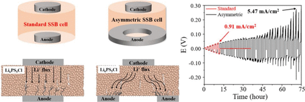
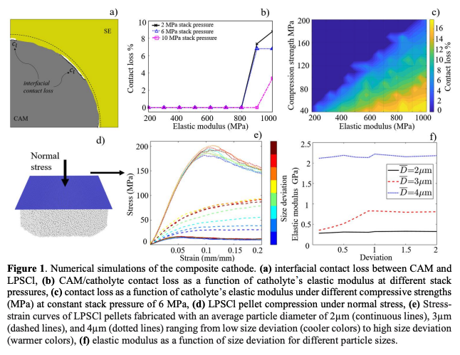
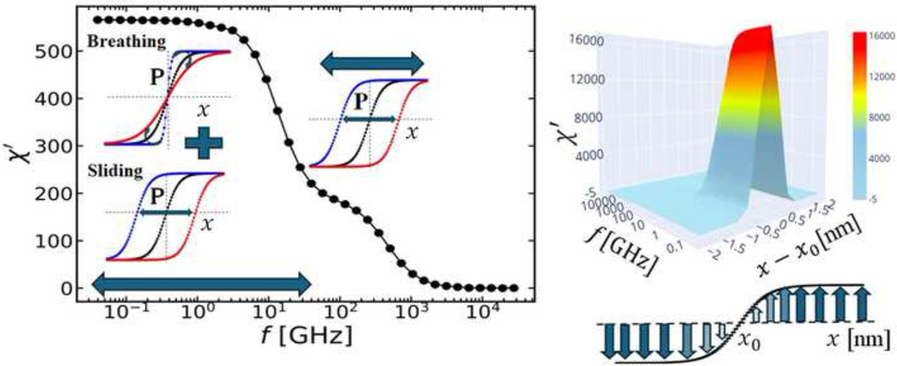
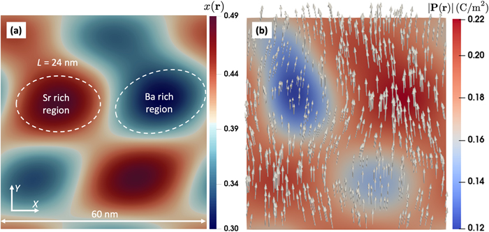
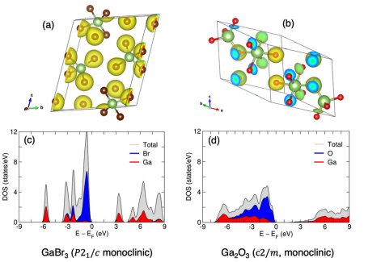
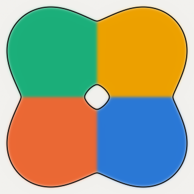

Ashok Gurung
I am a Postdoctoral Research Associate at
Washington State University,
where I work with
Prof. Scott Beckman
and
Prof. Sinisa Mesarovic
on multiscale and multiphysics modeling of functional ceramics.
My current research focuses on developing scalable COMSOL-based
simulation workflows for high-temperature sintering and joining
of dissimilar materials under extreme conditions.
I earned my Ph.D. in Physics from the
University of Connecticut,
where I was advised by
Prof. Serge Nakhmanson
,
and my M.S. in Physics from
Wright State University.
During my graduate research, I combined quantum-mechanical atomistic modeling
with thermodynamics-based phase-field simulations to predict material properties
and understand microstructure-driven performance.
More broadly, my research aims to connect
atomistic, mesoscopic, and continuum-scale simulations
to understand
how coupled electrical, thermal, chemical, and mechanical phenomena
govern microstructure evolution in diverse material systems,
including
solid-state batteries, functional ceramics, ferroelectrics,
and relaxor dielectrics
.
Email /
CV /
Scholar
/
LinkedIn /
ResearchGate /
GitHub
|
|
News
-
NEW
Book "Quantum Matters: From Fields to Life" by
S. K. Nayak, R. E. Goetz, and A. Gurung
is currently under submission.
-
April 2026: Presented at the
Workshop on the Accelerated Discovery, Design, and Development
of Materials for Extreme Environments
during the
Cer3D Symposium
.
-
March 2026: Gave a talk at the
D-Wave Quantum: Understanding Quantum Technologies Webinar
,
UConn.
-
February 2026: Paper
"Dendrite Suppression by Detouring Li Transport within
a Mechanically Anisotropic Solid Electrolyte"
accepted in Nano Letters.
-
June 2025: Joined
Washington State University
as a Postdoctoral Research Associate, working with
Prof. Scott Beckman on phase-field modeling of ceramic sintering.
-
April 2025: Served as an invited lecturer at
the NSF-Engine Workforce Development Summer Camp
(RIT), where I taught
galvanic cells and battery operation to community college
students and developed the program's instructional materials.
-
March 2025: Paper
"Extrinsic Dielectric Response due to Domain Wall Motion
in Ferroelectric BaTiO3"
published in Computational Materials Today.
-
September–November 2024: Served as a
Quantum Field Expert and Outreach Specialist for Quantum CT's
"What Are Quantum Technologies?" initiative
(UConn–Yale collaboration).
-
September 2024: Joined
Rochester Institute of Technology
as a Postdoctoral Research Associate.
-
August 2024: Defended my Ph.D. in Physics
at the University of Connecticut.
-
September 2023: Research selected as the
Journal of Applied Physics cover feature
— highlighting our phase-field work on relaxor ferroelectrics.
-
June 2019: Awarded the
Guest Travel Fund from
Los Alamos National Laboratory
for a 15-day research visit with the LANL theory group.
|
Research
Below is a selection of publications. See
Google Scholar
for a full list.
|
|

|
Dendrite Suppression by Detouring Li Transport within a
Mechanically Anisotropic Solid Electrolyte
A. N. Bage, J. M. Vazquez Mercado, F. D. Cunez,
A. Gurung, S. Li, and H. Tu
Nano Letters, 2026
Multiscale modeling and analysis of mechanically anisotropic solid
electrolytes for guiding lithium transport and suppressing
dendrite propagation.
|
|

|
Tuning Effective Mechanical Properties of Catholyte to Enhance
Cathode Performance in Solid-state Batteries
R. Elawadly, J. M. Vazquez Mercado, F. D. Cunez,
A. Gurung, I. A. Shozib, and Q. H. Tu
2025
SSRN
Coupled electro-chemo-mechanical modeling of catholyte properties and their influence on interfacial
contact stability and composite cathode performance.
|
|

|
Extrinsic Dielectric Response due to Domain Wall Motion in
Ferroelectric BaTiO3
A. Gurung, M. F. Ishtiyaq, S. P. Alpay,
J. M. Mangeri, and S. Nakhmanson
Computational Materials Today, 5, 100016, 2025
Phase-field-based investigation of how domain-wall dynamics
contribute to the dielectric response in ferroelectric
BaTiO3.
|
|

|
Modeling Structure-Properties Relations in Compositionally
Disordered Relaxor Dielectrics at the Nanoscale
A. Gurung, J. M. Mangeri, A. M. Hagerstrom,
N. D. Orloff, S. P. Alpay, and S. Nakhmanson
Journal of Applied Physics, 134, 104102, 2023
Nanoscale modeling of relaxor dielectrics to understand how
compositional disorder shapes structure–property relationships
and dielectric behavior.
|
|

|
Data-driven Methods for Discovery of Next-generation
Electrostrictive Materials
D. P. Trujillo, A. Gurung, J. Yu,
S. K. Nayak, S. P. Alpay, and P.-E. Janolin
npj Computational Materials, 8, 251, 2022
Combined data-driven screening and first-principles analysis
to identify promising electrostrictive materials.
|
Code & Projects
Open-source tools and simulation results on
GitHub.
|
|

|
Sintering-Multiphysics-Problem
COMSOL Multiphysics · Java API · SLURM/HPC · Python
Phase-field simulation of solid-state sintering coupled to
vacancy diffusion, plus the tools to run it robustly on HPC
clusters: checkpointed restart chains, license-aware batch
launchers, and standard pore / neck / compaction metrics.
Includes a four-grain simulation gallery showing neck growth
and pore closure.
|
|
|
Electrostrictive_Mining
Python · Materials Project database
Code for mining the Materials Project database to screen
candidate electrostrictive materials, used in the
npj Computational Materials (2022) study above.
|
Miscellanea
Teaching
-
Studio Lab TA — UConn,
PHYS 1501/1502 (2019–2020).
-
Traditional Lab TA — UConn &
Wright State, PHYS 1201–1502 (2016–2018).
-
Mentorship: A. N. Bage (PhD, RIT),
D. Brunner (MS, RIT), C. Schwarz & I. Bilalovski
(BS, UConn).
Talks
-
Finite Element Implementation of a Mesoscale Phase-Field
Formulation for High-Temperature Sintering of Polycrystalline
Solids — Cer3D, 2026.
- Dielectric dispersion of BaTiO3 via a local phase-field model — MS&T, 2023.
- Relaxor dielectric dispersion of Ba1-xSrxTiO3 — MS&T, 2022.
- Relaxor dielectric dispersion via a local phase-field model — EMA, 2022.
- Dielectric response in 5G materials with FEM — IAP Annual Meeting, 2019.
Service
- Reviewer for Phys. Rev. B, Phys. Rev. Applied, ACS AMI, Discover Materials.
- Member: APS, ACerS, Material Advantage, AIST.
- Quantum CT outreach contributor — "What Are Quantum Technologies?" (2024).
Honors
- Doctoral Dissertation Fellowship, UConn (2023).
- Conference Participation Award, UConn (2023).
- Pre-Doctoral Dissertation Fellowship, UConn (2019).
Skills
Phase-field modeling · FEM · MOOSE · COMSOL · molecular dynamics · DFT (VASP) · Python · MATLAB · C/C++ · shell · LaTeX · Git · HPC.
|
|